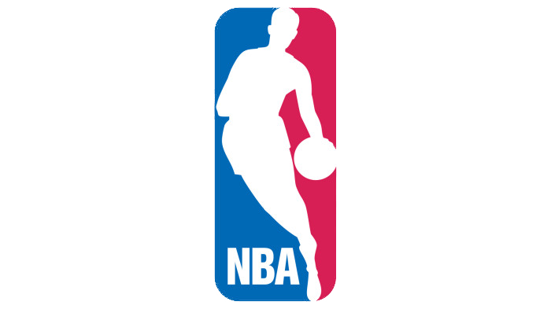

Les fautes:
On ne peut pas s'arrêter de dribbler puis recommencer sinon il y a reprise de drible.
Toucher une ligne de sortie est interdite avec le ballon en phase de jeu sinon il y a touche pour l'équipe adverse, que ce soit le ballon ou une partie du corps du joueur qui touche la ligne. Il doit y avoir un contact direct avec la ligne pour qu'il y ait sorti.
Un ballon ayant franchi la ligne sans avoir touché le sol est toujours en jeu.Après chacune de ces violations - marcher, reprise de dribble... la balle change de possession. L'équipe adverse repart à l'aide d'une touche sur le côté du terrain, au niveau où a eu lieu la violation.
Tout contact appuyé, qu'il soit volontaire ou involontaire, est une faute, que l'adversaire ait le ballon ou non.
Si on rentre fortement dans un défenseur, avec ou sans ballon, alors que celui-ci est à l'arrêt ou recule vers son panier à défendre, c'est une faute.
Si un joueur ou un coach manque de respect à une personne étant impliquée dans le match, l'arbitre peut lui donner une faute technique qui est corrigée par 1 ou 2 lancers francs. De même si un joueur donne un coup de pied ou de poing dans le ballon, une bouteille ou une chaise par exemple.
Si un joueur commet une faute importante sans jouer le ballon, l'arbitre peut lui mettre une faute antisportive qui est corrigée par 1, 2 ou 3 lancers francs
Si un joueur provoque une bagarre, l'arbitre doit lui mettre une faute disqualifiante qui est corrigée par 1, 2 ou 3 lancers francs. Le joueur doit quant à lui quitter le terrain et ne peut plus jouer jusqu'à la fin du match. La faute peut ensuite être réévaluée et le joueur suspendu pour plusieurs matchs selon la gravité de la faute.
Vocabulaire Technique
https://fr.wikipedia.org/wiki/Lexique_du_basket-ball
Anecdote:
Jerry West, l’homme derrière le logo de la NBA
Le logo de la NBA est iconique et a participé à cette mondialisation. Simple et élégant, bleu, rouge et blanc, aux couleurs des USA, il représente en fait la silhouette d’un joueur bien précis, Jerry West, meneur de jeu des Los Angeles Lakers dans les années 60 et 70.
